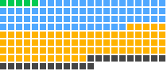

Data, Analytics and Databases agent skills
Skills for SQL, databases, vector stores, analytics and data pipelines. Several are published by the database vendors, so the agent queries, migrates and tunes with the vendor's own conventions.
- 180 listed skills
- 29 repositories
- 41 with full pages

Every dot is a listed data, analytics and databases skill, sorted by score.ABCD
Highest-scoring data and database skills in the October 22, 2026 snapshot: kaggle from shepsci/kaggle-skill (90/100), dbt-sf-to-bq-translator from google/skills (89/100) and data-scientist from tronghieu/agent-skills (86/100). Scores come from the Suede Skill Check.
Build a shortlist for your task →
All 180 data and database skills
No matching skills. Try fewer words or clear your search.
| Skill | Repository | What it does |
|---|---|---|
| basin 78/100 · C | cloudflare/skills | Builds and troubleshoots Cloudflare Basin analytics workflows with Basin Pipelines, Catalog, and SQL, such as streaming data into R2 Iceberg tables and querying them. |
| bigquery 85/100 · B | costory-io/costory-finops-mcp-skills | Investigate BigQuery compute and storage costs, compare billing models, and map spend through the hosted Costory MCP. Requires a Costory workspace, connected billing data and browser OAuth; review proposed changes before applying them. |
| conversation-review 77/100 · C | honeydew-ai/honeydew-ai-coding-agents-plugins | Reviews past analysis conversations in bulk, categorizes user feedback into improvement areas, and applies targeted changes to the semantic model or context layer. |
| dashboard-creator 75/100 · C | mhattingpete/claude-skills-marketplace | Creates HTML dashboards with KPI metric cards, bar, pie, and line charts, progress indicators, and other data visualizations. |
| data-scientist 86/100 · B | tronghieu/agent-skills | Turns business questions into data analysis, validated models, and decision-ready reports, including dataset profiling, A/B test checks, and predictive modeling. |
| dbt-sf-to-bq-translator 89/100 · B | google/skills | Translates Snowflake dbt SQL models to BigQuery SQL, handling SQL compilation, Jinja macro masking, BigQuery Translation Service workflows, config transformations, type casting, and deduplication. |
| faiss 77/100 · C | Orchestra-Research/AI-Research-SKILLs | Guides fast k-NN search and clustering of dense vectors with Facebook's FAISS, including GPU acceleration and Flat, IVF, and HNSW index types. |
| filtering 77/100 · C | honeydew-ai/honeydew-ai-coding-agents-plugins | Guides filtering data in structured queries, metric aggregations, and attribute expressions, covering filter syntax, date handling, and best practices. |
| firebase-firestore 81/100 · B | firebase/skills | Sets up, queries, and configures Cloud Firestore databases, including data modeling, security rules, indexes, and SDK integrations for Web, Python, iOS, Android, and Flutter. |
| firecrawl-company-directories 71/100 · C | firecrawl/skills | Extracts structured company lists from directories such as YC, Crunchbase, Product Hunt, and G2 using Firecrawl, into JSON, CSV, or CRM-ready lists. |
| firecrawl-dashboard-reporting 71/100 · C | firecrawl/skills | Pulls metrics from analytics dashboards and internal web tools with Firecrawl browser, including authenticated extraction, date-range reports, and cross-platform metric summaries. |
| firecrawl-scrape 82/100 · B | firecrawl/skills | Reads a known webpage or executes a discovered workflow or data-provider capability to return page content or structured results. |
| google-cloud-solution-agentic-analytics-spark-knowledge-catalog 85/100 · B | google/skills | Discovers requirements and designs a governed agentic analytics solution using Knowledge Catalog and Managed Service for Apache Spark, with metadata governance. |
| google-cloud-solution-hybrid-search-alloydb 85/100 · B | google/skills | Generates architecture, design, and deployment guidance for hybrid search systems combining semantic and keyword search, optimized for AlloyDB use cases. |
| kaggle 90/100 · A | shepsci/kaggle-skill | Handles Kaggle tasks when explicitly requested, covering competitions, datasets, models, notebooks, forums, benchmarks, hackathons, badges, and account setup. |
| migration-ready-schema 77/100 · C | avelikiy/great_cto | Sets data-model rules, such as provenance and rollback fields on importable entities, so a schema can import customer data from incumbent products. |
| model-exploration 80/100 · B | honeydew-ai/honeydew-ai-coding-agents-plugins | Explores the Honeydew semantic layer by discovering entities and fields, setting workspace and branch context, and running structured queries to spot-check field values. |
| mssql 83/100 · B | sanjay3290/ai-skills | Executes read-only SQL queries against multiple Microsoft SQL Server databases, supporting schema exploration, SELECT queries for data analysis, and checking database contents. |
| mysql 83/100 · B | sanjay3290/ai-skills | Executes read-only SQL queries against multiple MySQL databases, supporting schema exploration, SELECT queries for data analysis, and checking database contents. |
| pandas-pro 84/100 · B | jeffallan/claude-skills | Performs pandas DataFrame operations for data analysis, such as cleaning, joins, pivots, groupby aggregation, time series resampling, and handling missing values. |
| postgres 80/100 · B | sanjay3290/ai-skills | Executes read-only SQL queries against multiple PostgreSQL databases, supporting schema exploration, SELECT queries for data analysis, and checking database contents. |
| qdrant-advisor 77/100 · C | qdrant/skills | Diagnoses, troubleshoots, and advises on Qdrant deployments by loading the latest official Qdrant skills live from skills.qdrant.tech, covering performance, scaling, search quality, and monitoring. |
| qdrant-deployment-options 81/100 · B | qdrant/skills | Guides choosing a Qdrant deployment type, such as Docker, Cloud, local mode, embedded, Qdrant EDGE, or self-hosted, including when lowest latency is needed. |
| qdrant-edge 84/100 · B | qdrant/skills | Guides building on Qdrant Edge, the embedded in-process shard, including syncing with the server, BM25 and hybrid search, and snapshots. |
| qdrant-migration-tool 84/100 · B | qdrant/skills | Guides using the Qdrant Migration Tool CLI to move vectors, metadata, and sparse embeddings from other vector databases into Qdrant, including resuming interrupted runs. |
| qdrant-model-migration 84/100 · B | qdrant/skills | Guides migrating to a new embedding model in Qdrant without downtime, including re-embedding data, changing model dimensions, switching providers, and A/B testing models. |
| qdrant-multitenancy 84/100 · B | qdrant/skills | Guides tenant isolation architecture in Qdrant for multi-tenant applications, including partitioning tenants by payload, how many collections to create, and data residency. |
| qdrant-scaling 83/100 · B | qdrant/skills | Guides Qdrant scaling decisions such as node count, sharding, vertical versus horizontal scaling, throughput, tail latency, and retention windows for expiring old vectors. |
| qdrant-search-quality 78/100 · C | qdrant/skills | Diagnoses and improves Qdrant search relevance, covering embedding model choice, hybrid search, fusion, reranking, relevance feedback, and measuring retrieval quality. |
| qdrant-sizing 84/100 · B | qdrant/skills | Sizes a Qdrant deployment before provisioning, estimating RAM, node count, and instance type from vector count and dimensions, or checking an existing estimate. |
| qdrant-version-upgrade 84/100 · B | qdrant/skills | Covers upgrading Qdrant server and SDKs without interrupting availability or losing data integrity, including rolling upgrades, version compatibility, and pre-upgrade checks. |
| query 71/100 · C | honeydew-ai/honeydew-ai-coding-agents-plugins | Queries and analyzes data through the Honeydew semantic layer, including natural language analysis questions, deep multi-step investigations, and structured queries. |
| query-debugging 77/100 · C | honeydew-ai/honeydew-ai-coding-agents-plugins | Inspects past Honeydew query executions, including client, semantic definition, compiled SQL, and who ran them, and helps debug failures. |
| redis-clustering 75/100 · C | redis/agent-skills | Guides Redis Cluster and replication design, including hash tags for multi-key operations, avoiding CROSSSLOT errors, and reading from replicas to scale reads. |
| redis-connections 78/100 · C | redis/agent-skills | Guides Redis client and connection setup, covering pooling, multiplexing, pipelining, client-side caching with RESP3, avoiding slow commands, and tuning socket timeouts. |
| redis-core 75/100 · C | redis/agent-skills | Guides Redis data modeling, including choosing the right data structure and using consistent colon-separated key names. |
| redis-search 76/100 · C | redis/agent-skills | Guides Redis Search work, including FT.CREATE schema design, field types, query syntax, command selection, vector similarity, hybrid retrieval, and RAG pipelines. |
| sql-queries 78/100 · C | phuryn/pm-skills | Generates SQL queries from natural language descriptions for BigQuery, PostgreSQL, MySQL, and other dialects, reading database schemas from uploaded diagrams or documentation. |
| supabase 81/100 · B | supabase/agent-skills | Guides work on Supabase projects, including Database, Auth, Edge Functions, Realtime, Storage, client libraries, migrations, security audits, and debugging errors. |
| virtual-dimensions 81/100 · B | costory-io/costory-finops-mcp-skills | Create and preview custom cost-allocation dimensions with ordered CEL rules, leftover analysis and overlap checks. Requires the hosted Costory MCP and a connected workspace; approve rules and confirm publication. |
| workspace-branch 80/100 · B | honeydew-ai/honeydew-ai-coding-agents-plugins | Manages Honeydew workspace and branch context, including switching workspaces, creating or deleting branches, reviewing branch history, and creating pull requests. |
| accelerated-computing-cudf 73/100 · C | NVIDIA/skills | Official NVIDIA-authored guidance for NVIDIA cuDF GPU DataFrames, pandas acceleration, dask-cuDF, ETL, joins, groupby, CSV/Parquet I/O, nullable… |
| acreadiness-assess 74/100 · C | github/awesome-copilot | Run the AgentRC readiness assessment on the current repository and produce a static HTML dashboard at reports/index.html. Wraps `npx… |
| alloydb-basics 87/100 · B | google/skills | Manages clusters, instances, and backups for AlloyDB for PostgreSQL, and integrates with AlloyDB Model Context Protocol (MCP) tools for automated… |
| amazon-aurora-mysql 78/100 · C | aws/agent-toolkit-for-aws | Amazon Aurora MySQL — creates, modifies, and advises on Aurora MySQL clusters specifically (MySQL-compatible engine, Aurora serverless, parallel… |
| amazon-aurora-postgresql 78/100 · C | aws/agent-toolkit-for-aws | Amazon Aurora PostgreSQL — creates, modifies, and advises on Aurora PostgreSQL clusters specifically (PostgreSQL-compatible engine, Aurora… |
| amazon-documentdb 80/100 · B | aws/agent-toolkit-for-aws | Manages Amazon DocumentDB end-to-end — serverless-on-8.0 cluster setup, TLS/VPC/driver config, flexible-schema and vector-search data modeling… |
| amazon-neptune 72/100 · C | aws/agent-toolkit-for-aws | Provides authoritative guidance on Amazon Neptune Database and Neptune Analytics for graph, knowledge-graph, and relationship-heavy workloads —… |
| amazon-opensearch-service 78/100 · C | aws/agent-toolkit-for-aws | Guides migration, provisioning, search, log-analytics, trace-analytics, and Agentic AI Assistant workflows for Amazon OpenSearch Service and… |
| attribute-creation 69/100 · D | honeydew-ai/honeydew-ai-coding-agents-plugins | Guides you step-by-step through defining a calculated attribute (dimension) on a Honeydew entity. Covers SQL expression building and pushes to… |
| aws-database 81/100 · B | aws/agent-toolkit-for-aws | Routes any task involving AWS databases — choosing, comparing, recommending, getting started with, or operating a database — to the correct… |
| bigquery-ai-ml 79/100 · C | google/skills | Leverages BigQuery's built-in machine learning and GenAI capabilities for advanced data analytics. Use when you need to write SQL queries that… |
| bigquery-basics 80/100 · B | google/skills | Manages datasets, tables, and jobs in BigQuery. Use when you need to interact with BigQuery, run SQL queries, manage BigQuery resources (datasets… |
| bigquery-bigframes 87/100 · B | google/skills | Generates Python code using BigQuery DataFrames (BigFrames). Use by default for any Python data task involving BigQuery, including data processing… |
| bigquery-observability 85/100 · B | google/skills | Provides data-retrieval best practices, tool selection guidance, and performant SQL query syntax for BigQuery telemetry across INFORMATION_SCHEMA… |
| bigquery-optimization 85/100 · B | google/skills | Provides workflows to optimize BigQuery environments (capacity planning, editions), storage assets (partitioning, clustering, storage lifecycles… |
| bigquery-pipeline-audit 67/100 · D | github/awesome-copilot | Audits Python + BigQuery pipelines for cost safety, idempotency, and production readiness. Returns a structured report with exact patch locations. |
| bigquery-troubleshooting 85/100 · B | google/skills | Provides diagnostic workflows and step-by-step root-cause analysis procedures for actively broken, failing, or slow BigQuery jobs, execution graph… |
| bigtable-basics 87/100 · B | google/skills | Assists in provisioning instances/tables, designing performant schemas, and querying data in Bigtable. Use when designing Bigtable row keys… |
| chroma 77/100 · C | Orchestra-Research/AI-Research-SKILLs | Open-source embedding database for AI applications. Store embeddings and metadata, perform vector and full-text search, filter by metadata. Simple… |
| cloud-databases-onboarding 92/100 · A | google/skills | Guides users through discovering their database requirements, recommends a Google Cloud database based on a recommendation matrix, and assists in… |
| cloud-sql-basics 80/100 · B | google/skills | This file generates or explains Cloud SQL resources. Use this file when the user asks to create a Cloud SQL instance or database for MySQL… |
| connect-required-verification-information 75/100 · C | stripe/ai | Use this skill when the user asks what information a Stripe Connect connected account must provide for verification, onboarding, KYC, or account… |
| connecting-to-data-source 82/100 · B | aws/agent-toolkit-for-aws | Create and troubleshoot AWS Glue connections to JDBC databases (Oracle, SQL Server, PostgreSQL, MySQL, RDS), Redshift, Snowflake, and BigQuery… |
| context-item-creation 66/100 · D | honeydew-ai/honeydew-ai-coding-agents-plugins | Guides you through creating context items — instructions, skills, knowledge pointers, and memory events — that give the AI analyst persistent… |
| create-dashboard 84/100 · B | gooseworks-ai/goose-skills | Create a custom web dashboard (React + Vite + Express) inside your sandbox to visualize the agent's Turso database. The dashboard is served on port… |
| creating-amazon-aurora-db-cluster-with-instances 74/100 · C | aws/agent-toolkit-for-aws | Creates a complete Amazon Aurora database cluster with instances, handling cluster creation, instance provisioning, and Secrets Manager password… |
| creating-data-lake-table 82/100 · B | aws/agent-toolkit-for-aws | Create managed Iceberg tables using Amazon S3 Tables (s3tables API namespace) with automatic compaction and snapshot management. Sets up table… |
| creating-oracle-to-postgres-master-migration-plan 74/100 · C | github/awesome-copilot | Discovers all projects in a .NET solution, classifies each for Oracle-to-PostgreSQL migration eligibility, and produces a persistent master… |
| creating-oracle-to-postgres-migration-bug-report 77/100 · C | github/awesome-copilot | Creates structured bug reports for defects found during Oracle-to-PostgreSQL migration. Use when documenting behavioral differences between Oracle… |
| dask 87/100 · B | K-Dense-AI/claude-scientific-skills | Scales pandas, NumPy, and custom Python research workflows beyond memory or across clusters with Dask. Covers DataFrames, Arrays, Bags, Futures… |
| data-charts-tako 71/100 · C | gooseworks-ai/goose-skills | Search and visualize the world's data - get charts, insights, and embeddable knowledge cards for finance, economics, demographics, sports, and more |
| data-designer 81/100 · B | NVIDIA/skills | Use when the user wants to create a dataset, generate synthetic data, or build a data generation pipeline. |
| database-lookup 74/100 · C | K-Dense-AI/claude-scientific-skills | Queries documented public database APIs with explicit endpoints, filters, pagination, and provenance. Used when a scientific, regulatory, financial… |
| database-optimizer 84/100 · B | jeffallan/claude-skills | Optimizes database queries and improves performance across PostgreSQL and MySQL systems. Use when investigating slow queries, analyzing execution… |
| datalineage-bigquery-asset-impact-analysis 85/100 · B | google/skills | Analyzes the downstream impact (blast radius) using data lineage on Google Cloud when a BigQuery table or view is broken, stale, or modified… |
| datalineage-summary 87/100 · B | google/skills | Summarizes data lineage graphs on Google Cloud to help users debug data quality issues and understand data provenance for BigQuery and Cloud… |
| ddia-systems 81/100 · B | wondelai/skills | Design data systems by understanding storage engines, replication, partitioning, transactions, and consistency models. Use when the user mentions… |
| developing-applications-on-managed-service-for-apache-flink 68/100 · D | aws/agent-toolkit-for-aws | MANDATORY for Flink or Amazon Managed Service for Apache Flink (MSF) questions. You MUST activate this skill BEFORE answering — do not answer from… |
| dms-schema-conversion 69/100 · D | aws/agent-toolkit-for-aws | Handles the full DMS Schema Conversion lifecycle including creating migration projects, converting database schemas to a target engine, running… |
| domain-creation 69/100 · D | honeydew-ai/honeydew-ai-coding-agents-plugins | Guides you through creating a Honeydew domain — a governance object that scopes entity/field visibility and applies mandatory filters — ideal for… |
| dummy-dataset 78/100 · C | phuryn/pm-skills | Generate realistic dummy datasets for testing with customizable columns, constraints, and output formats (CSV, JSON, SQL, Python script). Use when… |
| entity-creation 69/100 · D | honeydew-ai/honeydew-ai-coding-agents-plugins | Guides you through defining a new Honeydew entity from a data warehouse source — covering source type, granularity key, and initial attribute… |
| exporting-rds-to-s3 74/100 · C | aws/agent-toolkit-for-aws | Exports Amazon RDS or Aurora database snapshots to Amazon S3 in Apache Parquet format for analytics, backup, or data migration. Handles snapshot… |
| finding-data-lake-assets 84/100 · B | aws/agent-toolkit-for-aws | Resolve data lake and lakehouse asset references across Glue Data Catalog, S3, S3 Tables, and Redshift. Triggers on: find the table, where is our… |
| firebase-data-connect 72/100 · C | firebase/skills | Builds and deploys Firebase SQL Connect (aka Firebase Data Connect) backends with PostgreSQL securely. Use when designing schemas with tables and… |
| firecrawl-agent 79/100 · C | firecrawl/skills | Autonomously navigate websites and extract structured data across pages. Use when the task requires navigation or no suitable ready-made workflow or… |
| firecrawl-alexandria 69/100 · D | firecrawl/skills | Find a direct path to structured data through ready-made workflows, data APIs, and indexes. Follow the search skill to discover and inspect tools… |
| firecrawl-crawl 74/100 · C | firecrawl/skills | Bulk-extract many pages from one site or section. Use for "crawl", "everything under /docs", or content spanning linked pages. |
| firecrawl-download 74/100 · C | firecrawl/skills | Save a site or section as local files (markdown, screenshots). Use for "download the site", offline docs, or a local copy for reference. |
| firecrawl-knowledge-ingest 71/100 · C | firecrawl/skills | Export documentation portals, help centers and API reference sites into local markdown or JSON with Firecrawl browser, including pages that render… |
| firecrawl-map 76/100 · C | firecrawl/skills | Discover and list a site's URLs, with search filtering. Use for "map the site" or "find the URL for" requests — when the user knows the site but not… |
| geopandas 79/100 · C | K-Dense-AI/claude-scientific-skills | Guidance and local audit tools for Python workflows that directly use GeoPandas GeoSeries, GeoDataFrame, spatial operations, or vector-data I/O. |
| go-database 95/100 · A | eduardo-sl/go-agent-skills | Database patterns for Go services: database/sql, connection management, transactions, migrations, query builders, and ORM usage (sqlc, GORM, ent)… |
| google-analytics 73/100 · C | nowork-studio/NotFair | Analyze connected Google Analytics 4 traffic, acquisition, engagement, landing pages, ecommerce, events, and conversions, and safely manage… |
| google-analytics-admin-api-basics 83/100 · B | google/skills | Manages Google Analytics account and property settings, enables the Analytics Admin API via the Cloud CLI, lists accounts and properties, and… |
| google-analytics-data-api-basics 87/100 · B | google/skills | Manages Google Analytics reporting data, enables the Analytics Data API via the Cloud CLI, and creates reports using the Google Analytics Data API… |
| google-cloud-solution-agentic-ai-borderless-data-lakehouse 85/100 · B | google/skills | Discovers requirements and designs a borderless open data lakehouse using Lakehouse for Apache Iceberg and BigQuery data agents. Use when… |
| google-cloud-solution-agentic-ai-data-science-workflow 87/100 · B | google/skills | Designs a tailored multi-product agentic data science architecture on Google Cloud that incorporates opinionated best practices. Use when… |
| huggingface-datasets 77/100 · C | huggingface/skills | Use this skill for Hugging Face Dataset Viewer API workflows that fetch subset/split metadata, paginate rows, search text, apply filters, download… |
Show the other 80 data and database skills
| Skill | Repository | What it does |
|---|---|---|
| ingesting-into-data-lake 80/100 · B | aws/agent-toolkit-for-aws | Import data into the AWS data lake from S3 files, local uploads, JDBC databases (Oracle, SQL Server, PostgreSQL, MySQL, RDS, Aurora), Amazon… |
| managed-airflow-dag-authoring 84/100 · B | google/skills | Provides guidance for authoring Apache Airflow DAGs in Managed Service for Apache Airflow (MSAA; formerly Cloud Composer). Covers environment… |
| managed-airflow-dag-troubleshooting 84/100 · B | google/skills | Provides guidance for troubleshooting Apache Airflow DAGs (failed DAG runs and task instances) in Managed Service for Apache Airflow (MSAA; formerly… |
| managed-airflow-migrations 87/100 · B | google/skills | Provides guidance for migrating Apache Airflow DAGs in Managed Service for Apache Airflow (MSAA; formerly Cloud Composer). Covers migration to… |
| matplotlib 81/100 · B | K-Dense-AI/claude-scientific-skills | Creates and customizes scientific plots with Matplotlib. Used for fine-grained control over plot elements, novel plot types, and scientific… |
| metric-creation 69/100 · D | honeydew-ai/honeydew-ai-coding-agents-plugins | Guides you step-by-step through defining a business metric (aggregation) on a Honeydew entity. Covers SQL expression building and pushes to Honeydew… |
| migrating-oracle-to-postgres-data-access-code 77/100 · C | github/awesome-copilot | Migrates .NET/C# data access code from Oracle to PostgreSQL (Npgsql). Replaces Oracle NuGet packages, rewrites… |
| migrating-oracle-to-postgres-stored-procedures 74/100 · C | github/awesome-copilot | Migrates Oracle PL/SQL stored procedures to PostgreSQL PL/pgSQL. Translates Oracle-specific syntax, preserves method signatures and type-anchored… |
| migrating-to-amazon-redshift 76/100 · C | aws/agent-toolkit-for-aws | Guides an end-to-end data-warehouse migration to Amazon Redshift — discovery, schema/SQL/stored-procedure/macro/script conversion, data migration… |
| neon 74/100 · C | neondatabase/agent-skills | Overview of Neon, a complete set of cloud backend primitives around Lakebase Postgres: Auth, Object Storage, Functions, the AI Gateway, and… |
| neon-auth 82/100 · B | neondatabase/agent-skills | Add authentication to a new app. Use for "add auth", "add login", Neon Auth (Managed Better Auth), identity routing, sign-up, sign-in, password… |
| neon-object-storage 79/100 · C | neondatabase/agent-skills | S3-compatible object storage that branches with your database, so each branch gets its own copy of the files and the rows that point at them. Use… |
| neon-postgres 82/100 · B | neondatabase/agent-skills | Guides and best practices for working with Lakebase Postgres on Neon: connections, pooled vs direct, schema migrations, branching, autoscaling… |
| neon-postgres-egress-optimizer 81/100 · B | neondatabase/agent-skills | Diagnose and fix excessive Postgres egress (network data transfer) in a codebase. Use when a user mentions high database bills, unexpected data… |
| neon-realtime 84/100 · B | neondatabase/agent-skills | Neon Realtime makes any SQL query live. Build realtime, reactive apps and agents on Lakebase Postgres with live SQL queries and reactivity… |
| networkx 85/100 · B | K-Dense-AI/claude-scientific-skills | Creates, analyzes, and visualizes complex networks and graphs in Python with NetworkX. Use when working with network/graph data structures… |
| nvflare-fed-stats 85/100 · B | NVIDIA/skills | Compute federated statistics over tabular data (count, sum, mean, stddev, var, histogram, quantile, noise-protected min/max) and image data (count… |
| nvidia-ontology-management 81/100 · B | NVIDIA/skills | Model and publish semantic definitions in Auto Ontology. Use for terms, relationships, measures, imports, and governed results—not deployment or… |
| nvidia-ontology-query 81/100 · B | NVIDIA/skills | Query Auto Ontology and validate generated SQL, rows, and answers. Use for MCP or REST access, readiness, authentication, conversations, and… |
| nvidia-ontology-setup 81/100 · B | NVIDIA/skills | Set up or troubleshoot the Auto Ontology runtime. Use for Helm (the official install), Docker Compose, developer setup, and MCP connection to an… |
| paidf-curation-and-retrieval 85/100 · B | NVIDIA/skills | Use when operating PAIDF Curation and Retrieval or NVIDIA Cosmos Curator pipelines (split, filter, caption, embed, dedup, shard, image annotate) or… |
| pinecone 77/100 · C | Orchestra-Research/AI-Research-SKILLs | Managed vector database for production AI applications. Fully managed, auto-scaling, with hybrid search (dense + sparse), metadata filtering, and… |
| polars 79/100 · C | K-Dense-AI/claude-scientific-skills | High-performance DataFrame library for Python ETL, analytics, and pandas migration. It supports expression-based data manipulation with lazy query… |
| postgres-pro 84/100 · B | jeffallan/claude-skills | Use when optimizing PostgreSQL queries, configuring replication, or implementing advanced database features. Invoke for EXPLAIN analysis, JSONB… |
| postgresql-code-review 69/100 · D | github/awesome-copilot | PostgreSQL-specific code review assistant focusing on PostgreSQL best practices, anti-patterns, and unique quality standards. Covers JSONB… |
| postgresql-optimization 69/100 · D | github/awesome-copilot | PostgreSQL-specific development assistant focusing on unique PostgreSQL features, advanced data types, and PostgreSQL-exclusive capabilities. Covers… |
| pr-dashboard 79/100 · C | github/awesome-copilot | Open a GitHub PR dashboard in the browser. Use when the user asks to see their pull requests, open the PR dashboard, show PRs for a date range, or… |
| qdrant-clients-sdk 70/100 · C | qdrant/skills | Qdrant provides client SDKs for various programming languages, allowing easy integration with Qdrant deployments. |
| qdrant-horizontal-scaling 73/100 · C | qdrant/skills | Diagnoses and guides Qdrant horizontal scaling decisions. Use when someone asks 'vertical or horizontal?', 'how many nodes?', 'how many shards?'… |
| qdrant-hybrid-search 75/100 · C | qdrant/skills | Explains hybrid search in Qdrant. Use when someone asks 'how do I setup hybrid search?', 'how to combine keyword and semantic search?', 'sparse plus… |
| qdrant-hybrid-search-combining 76/100 · C | qdrant/skills | Fusing scores from multiple searches into a single ranked result (RRF, DBSF, custom fusion). Use when someone asks 'RRF or DBSF?', 'how to combine… |
| qdrant-hybrid-search-prefetches 76/100 · C | qdrant/skills | Constructing prefetch queries for hybrid retrieval, including sparse/dense and multi-field setups, and choosing a sparse embedding model. Use when… |
| qdrant-indexing-performance-optimization 73/100 · C | qdrant/skills | Diagnoses and fixes slow Qdrant indexing and data ingestion. Use when someone reports 'uploads are slow', 'indexing takes forever', 'optimizer is… |
| qdrant-memory-usage-optimization 76/100 · C | qdrant/skills | Diagnoses and reduces Qdrant memory usage. Use when someone reports 'memory too high', 'RAM keeps growing', 'node crashed', 'out of memory', 'memory… |
| qdrant-minimize-latency 73/100 · C | qdrant/skills | Guides Qdrant query latency optimization. Use when someone asks 'search is slow', 'how to reduce latency', 'p99 is too high', 'tail latency'… |
| qdrant-performance-optimization 81/100 · B | qdrant/skills | Navigation hub linking sub-skills for proactive Qdrant tuning: search speed, indexing performance, and memory usage optimization. Use when planning… |
| qdrant-relevance-feedback 74/100 · C | qdrant/skills | Expanding the candidate pool via relevance feedback, as an alternative to reranking when a dense retriever is too weak. Use when someone asks about… |
| qdrant-scaling-data-volume 72/100 · C | qdrant/skills | Guides Qdrant data volume scaling decisions. Use when someone asks 'data doesn't fit on one node', 'too much data', 'need more storage', 'vertical… |
| qdrant-scaling-qps 73/100 · C | qdrant/skills | Guides Qdrant query throughput (QPS) scaling. Use when someone asks 'how to increase QPS', 'need more throughput', 'queries per second too low'… |
| qdrant-scaling-query-volume 70/100 · C | qdrant/skills | Guides Qdrant query volume scaling. Use when someone asks 'query returns too many results', 'scroll performance', 'large limit values', 'paginating… |
| qdrant-search-quality-diagnosis 76/100 · C | qdrant/skills | Diagnoses Qdrant search quality issues. Use when someone reports 'results are bad', 'wrong results', 'not relevant results', 'missing matches'… |
| qdrant-search-speed-optimization 76/100 · C | qdrant/skills | Diagnoses and fixes slow Qdrant search. Use when someone reports 'search is slow', 'high latency', 'queries take too long', 'low QPS', 'throughput… |
| qdrant-search-strategies 78/100 · C | qdrant/skills | Guides Qdrant search strategy selection. Use when someone asks 'should I use hybrid search?', 'how to rerank?', 'results are not relevant', 'I don't… |
| qdrant-sliding-time-window 76/100 · C | qdrant/skills | Guides sliding time window scaling in Qdrant. Use when someone asks 'only recent data matters', 'how to expire old vectors', 'time-based data… |
| qdrant-tenant-scaling 73/100 · C | qdrant/skills | Guides Qdrant multi-tenant scaling. Use when someone asks 'how to scale tenants', 'one collection per tenant?', 'tenant isolation', 'dedicated… |
| qdrant-vector-search 69/100 · D | Orchestra-Research/AI-Research-SKILLs | High-performance vector similarity search engine for RAG and semantic search. Use when building production RAG systems requiring fast nearest… |
| qdrant-vertical-scaling 76/100 · C | qdrant/skills | Guides Qdrant vertical scaling decisions. Use when someone asks 'how to scale up a node', 'need more RAM', 'upgrade node size', 'vertical scaling'… |
| querying-aws-cloudwatch 67/100 · D | aws/agent-toolkit-for-aws | Runs SQL queries on CloudWatch Logs data exported as Apache Iceberg tables in S3 Tables. Covers VPC Flow Logs, WAF logs, CloudFront access logs… |
| querying-aws-sagemaker-catalog 69/100 · D | aws/agent-toolkit-for-aws | Runs SQL analytics on SageMaker Catalog asset metadata tables exported as Apache Iceberg in S3 Tables. Covers governance queries, asset growth… |
| querying-data-lake 84/100 · B | aws/agent-toolkit-for-aws | Execute and manage Athena SQL queries across default and federated catalogs (Glue, S3 Tables, Redshift). Triggers on phrases like: query data, run… |
| ray-data 77/100 · C | Orchestra-Research/AI-Research-SKILLs | Scalable data processing for ML workloads. Streaming execution across CPU/GPU, supports Parquet/CSV/JSON/images. Integrates with Ray Train, PyTorch… |
| rds-oss 67/100 · D | aws/agent-toolkit-for-aws | Advises on Amazon RDS open-source engines (MySQL, MariaDB, PostgreSQL) for instance creation, upgrade planning, commitment pricing, proxy… |
| rds-sqlserver 78/100 · C | aws/agent-toolkit-for-aws | Provides connectivity, authentication, and troubleshooting guidance for Amazon RDS for SQL Server. Applicable when users ask about SSMS times out… |
| redshift-guide 76/100 · C | aws/agent-toolkit-for-aws | Amazon Redshift is NOT PostgreSQL; corrects LLM mistakes; covers SQL, metadata, connectivity/auth, storage, query performance, and operations… |
| relation-creation 69/100 · D | honeydew-ai/honeydew-ai-coding-agents-plugins | Guides you through defining a relationship between two Honeydew entities — covering join type, direction, cross-filtering, and connection method —… |
| reviewing-oracle-to-postgres-migration 77/100 · C | github/awesome-copilot | Identifies Oracle-to-PostgreSQL migration risks by cross-referencing code against known behavioral differences (empty strings, refcursors, type… |
| seaborn 79/100 · C | K-Dense-AI/claude-scientific-skills | Creates Seaborn statistical visualizations with pandas integration for distributions, relationships, categorical comparisons, regression displays… |
| signal-write 69/100 · D | github/awesome-copilot | Emit structured agent signals — hands-up, blocked, done, checkpoint, partnership. Signals are written as JSON to .signals/ for dashboard consumption… |
| spanner-basics 80/100 · B | google/skills | Assists in provisioning instances and databases, designing performant schemas, and querying data in Cloud Spanner on Google Cloud. Use when… |
| spark-engineer 84/100 · B | jeffallan/claude-skills | Use when writing Spark jobs, debugging performance issues, or configuring cluster settings for Apache Spark applications, distributed data… |
| sql-code-review 69/100 · D | github/awesome-copilot | Universal SQL code review assistant that performs comprehensive security, maintainability, and code quality analysis across all SQL databases… |
| sql-object-impact-analysis 82/100 · B | github/awesome-copilot | Before modifying a table, column, stored procedure, view, or trigger in a legacy codebase, trace every place that references it — across other SQL… |
| sql-optimization 69/100 · D | github/awesome-copilot | Universal SQL performance optimization assistant for comprehensive query tuning, indexing strategies, and database performance analysis across all… |
| sql-pro 84/100 · B | jeffallan/claude-skills | Optimizes SQL queries, designs database schemas, and troubleshoots performance issues. Use when a user asks why their query is slow, needs help… |
| sql-server-table-reconciliation 79/100 · C | github/awesome-copilot | Use when: comparing SQL Server tables across instances, data migration validation, ETL verification, row mismatch detection, schema drift… |
| ssma-console 77/100 · C | github/awesome-copilot | Use when: SSMA console operations — create project, generate assessment report, convert schema, migrate data, Oracle to SQL Server migration, schema… |
| stripe-directory 71/100 · C | stripe/ai | Identifies external providers, merchants, nonprofits, platforms, APIs, and software services, and resolves the documented way to engage them — to… |
| stripe-projects 79/100 · C | stripe/ai | Use when the user wants to provision infrastructure or third-party services using Stripe Projects. Triggers: "I need a database", "set up auth"… |
| Suede AI Analytics Skills 91/100 · A | JasonColapietro/suede-creator-skills | Suede AI Analytics Skills. Use when asked to "fix our analytics events" or set up GA4/GTM, key events, consent, UTMs and search/AI channels with… |
| Suede AI Revenue Operations Skills 91/100 · A | JasonColapietro/suede-creator-skills | Define lifecycle stages, fit and engagement scores, MQL/SQL handoffs, routing SLAs, pipeline hygiene, CRM automation, deal-desk tiers, and dashboard… |
| supabase-postgres-best-practices 67/100 · D | supabase/agent-skills | Postgres best practices maintained by Supabase, for Postgres running anywhere. Load this skill BEFORE writing or changing anything that lives in a… |
| tao-convert-dataset-format 86/100 · B | NVIDIA/skills | Run `tao-daft convert` to convert NVIDIA TAO DAFT datasets between supported formats. Do not use for non-DAFT data. Use when the user asks to… |
| tao-data-io 78/100 · C | NVIDIA/skills | The data-mover for TAO jobs — decides the storage tier (A pre-positioned mount with zero fetch / B volume-from-S3 / C ephemeral in-compute fetch)… |
| umap-learn 77/100 · C | K-Dense-AI/claude-scientific-skills | Applies UMAP-learn to nonlinear dimensionality reduction, 2D/3D embeddings, clustering preprocessing, supervised or semi-supervised UMAP, DensMAP… |
| upstash-redis 83/100 · B | github/awesome-copilot | Use Redis over HTTP from serverless and edge runtimes with @upstash/redis, and add rate limiting with @upstash/ratelimit. Use when the user mentions… |
| vaex 87/100 · B | K-Dense-AI/claude-scientific-skills | Processes large tabular scientific datasets with Vaex expressions, filtered views, streamed statistics, binned visualizations, and file conversion… |
| validation 69/100 · D | honeydew-ai/honeydew-ai-coding-agents-plugins | Use after creating or modifying ANY Honeydew object (metric, attribute, entity, domain). Provides type-specific validation logic to ensure objects… |
| vss-query-analytics 82/100 · B | NVIDIA/skills | Use this skill when reading video-analytics metrics, incidents, alerts, and sensor data via the VA-MCP server (port 9901). Not for live VLM or… |
| winui3-migration-guide 69/100 · D | github/awesome-copilot | UWP-to-WinUI 3 migration reference. Maps legacy UWP APIs to correct Windows App SDK equivalents with before/after code snippets. Covers namespace… |
| zarr-python 87/100 · B | K-Dense-AI/claude-scientific-skills | Stores and queries chunked N-D scientific arrays with Zarr-Python 3, including codecs, sharding, S3/GCS storage, and NumPy/Dask/Xarray integration… |
How to choose data, analytics and databases skills
Start with the vendor's own skill for the database you run. It knows the dialect, the limits and the migration tooling that generic SQL advice gets wrong.
Skills that connect to a live database show the variables they read under Before you install. Give them a read-only role until you trust their output.
For analytics, check whether a skill produces a query, a chart or a report, and pick the one whose output drops into your existing workflow.
Data and database skills by topic
SQL and Databases 97Vector Databases and Embeddings 38Data Analysis 26Data Warehouses 24Google Cloud 23AWS 21Data Engineering and Pipelines 19Supabase and Firebase 10RAG and Retrieval 9Web Scraping and Browser Automation 8MCP Servers 7Data Visualization and Charts 6Machine Learning 4Marketing Analytics 4Performance and Load Testing 4Code Review 3Payments and Stripe 3
All topics · Skills by cost and license · Skills by capability
Best data and database skills by task
Where to start
Featured data and database skills
Top data and database collections
Other skill directories
AI Agents and LLM Engineering · Developer Tools and Frameworks · Marketing and SEO · Product Management · Science and Research · DevOps and Cloud · Video, Image, Audio and Creative · Productivity and Knowledge Work · Business, Sales and Finance · Testing and QA · Security · Frontend and Design · Writing and Editing · Code Review and Code Quality · Documents and Office Files
Find your next useful skill
Explore Rising Skills with quality scores and source reports, or search from inside your agent.
Get Rising Skills by email · Read Rising Skills · Install the finder · State of Agent Skills